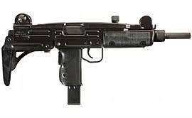

Пистолет пулемет UZI
Описание
В основе пистолетов-пулемётов лежит схема со свободным затвором: стрельба производится с открытого затвора. Выстрел производится незадолго до прихода затвора в крайнее переднее положение. В крайнем переднем положении затвор как бы прикрывает собой сверху казённую часть ствола. Такая конструкция позволяет немного сократить длину оружия при заданной длине ствола.
Спусковой механизм обеспечивает два режима огня: одиночный и автоматический. Переводчик, он же предохранитель, расположен на левой стороне оружия, возле рукоятки. На задней части рукоятки также расположен специальный предохранитель, допускающий стрельбу лишь при полном охвате рукоятки рукой.
В пистолете-пулемёте «Узи» используют как стандартный патрон 9×19 мм Парабеллум, так и специализированный усиленный патрон 9мм +Р+[5]. Существующие магазины рассчитаны на 25, 32, 36, 40 и 62 патрона, в том числе можно применять магазины от таких ПП, как МP-40, СТЭН и «Карл Густав».
История:
В первые годы существования государства Израиль, после окончания войны за независимость, израильская армия испытывала острый недостаток современного и технологичного стрелкового оружия.
Израильтяне имели на вооружении множество ПП самых разных моделей, наиболее массово использовались (в порядке убывания) следующие образцы: MP 38/40, Sterling L2, STEN, ПП Томпсона, Suomi, ППШ. Все они были в своё время предоставлены СССР и США.
На сегодняшний день «Узи» стал одним из наиболее массовых видов оружия в мире: по данным концерна IMI, на конец 2001 года объём продаж пистолетов-пулемётов марки «Узи» достиг 2,5 миллиарда долларов США. Пистолет-пулемёт Узи в популярности уступает разве что советскому / российскому автомату Калашникова.